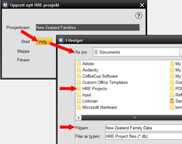

Denne skjermen lar deg opprette et nytt prosjekt, definere navnet og filnavnet, og angi plasseringen der databasefilene skal lagres. Merk at dette IKKE skal brukes til å importere et TMG-datasett. Prosessen for Importere data fra TMG velges separat fra VERKTØY-menyen. Å velge Opprett prosjekt fra prosjektmenyen gir en tretrinnsprosess å følge: 1. Gi prosjektet et navn for å identifisere det i fremtiden. Dette skal være beskrivende og kan bestå av flere ord, men må være unik 2. Klikk på BLA for å velge hvor databasen skal lagres. En standardplassering vil bli presentert, men du kan velge en annen om nødvendig 3. Når filplasseringen er valgt, gi prosjektet et kortfattet filnavn, som må være forskjellig fra alle andre HRE Project-filer som er lagret på dette stedet. Windows/MAC-konvensjoner om tegn du kan bruke i filnavn, må følges, og HRE vil automatisk legge til .mv.db-filtillegget. Trykk VELG. Nå vil vinduet være komplett som viser ditt nye prosjektnavn, filnavn og plassering På dette tidspunktet kan du velge AVBRYT eller OPPRETT det nye prosjektet Hvis du nå har opprettet prosjektet, vil det initialiseres, åpnes og gjøres AKTIV. Et vindu vises som indikerer at prosessen er fullført. Du kan nå begynne å legge inn data i det nye prosjektet, eller velge å bytte til et annet åpent prosjekt for å være aktivt, eller åpne et annet prosjekt. |
|
Relaterte temaer |